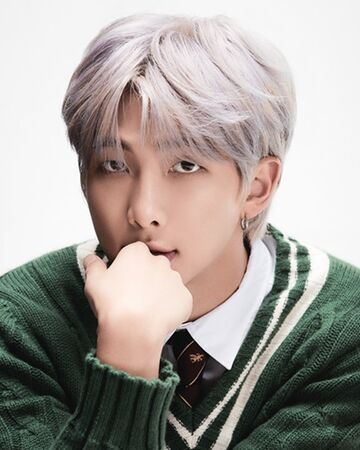
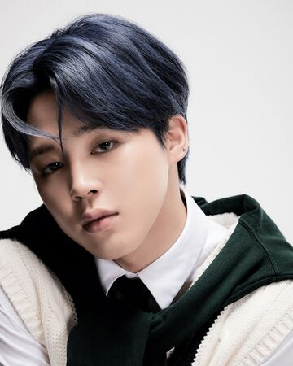
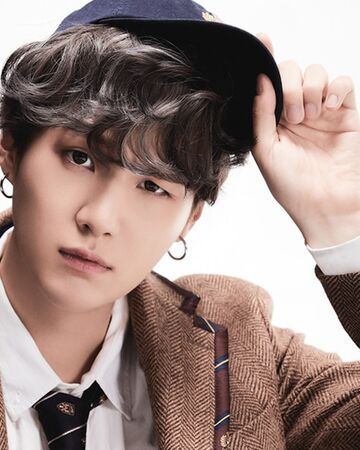
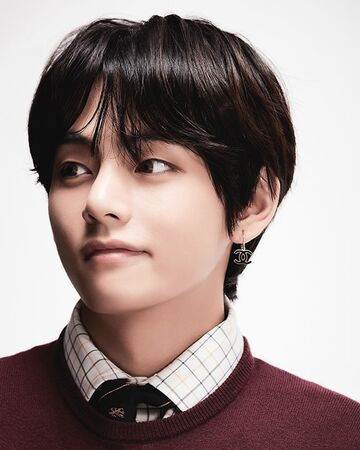
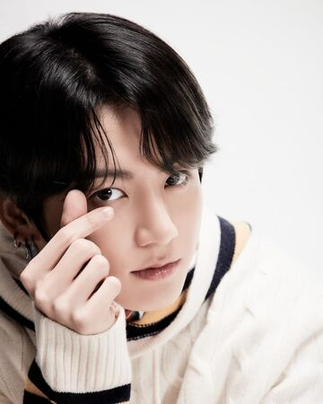

JIN
Kim Seok-jin was born on December 4, 1992, in Gwacheon, Gyeonggi Province, South Korea. His family consists of his mother, father and older brother. While in junior high school, Kim was scouted by South Korean K-pop agency SM Entertainment off the street, but he rejected the offer at the time.He initially intended to be an actor, attending Konkuk University and graduating with a degree in art and acting on February 22, 2017.[6][7] He enrolled in graduate school at Hanyang Cyber University, to pursue studies in areas other than music.
RM
Kim Nam-joon (Korean: 김남준; born September 12, 1994), better known as RM (formerly Rap Monster), is a South Korean rapper, songwriter, and record producer. He is the leader and a rapper in the South Korean boy group BTS, managed under Big Hit Entertainment. In 2015, he released his first solo mixtape, RM. As of October 2018, his second mixtape, Mono, is the highest charting album by a Korean soloist on the Billboard 200 chart, having peaked at 26.
JIMIN
Park Ji-min (Korean: 박지민) was born on October 13, 1995 in Geumjeong District, Busan, South Korea.His immediate family includes mother, father, and a younger brother. When he was a child, he attended Busan's Hodong Elementary School and Yonsan Middle School.During middle school, he attended Just Dance Academy and learned popping and locking dance. Prior to becoming a trainee, Jimin studied contemporary dance at Busan High School of Arts and was a top student in the modern dance department. After a teacher suggested he audition with an entertainment company, it led him to Big Hit Entertainment. Once he passed the auditions in 2012, he transferred to Korean Arts School.
SUGA
Min Yoon-gi was born on March 9, 1993 in Daegu, South Korea.[1] The younger of two sons, he attended Taejeon Elementary School, Gwaneum Middle School, and Apgujeong High School.[2] He became interested in rap after hearing "Reggae Muffin" by Stony Skunk, stating that it was different from anything he had ever heard before. After hearing Epik High, he decided to become a rapper.
JHOPE

J-Hope was born as Jung Ho-seok (Korean: 정호석) on February 18, 1994, in Gwangju, South Korea, where he lived with his parents and older sister.Before debuting with BTS, he was part of the underground dance team Neuron and took dance classes at Gwangju Music Academy.J-Hope had been relatively well known for his skills in dance prior to his debut; he won various local prizes for dance, including placing first in a national dance competition in 2008.[2][3] His skills in dance eventually led him to gain interest in singing, helping him to audition as an idol trainee.
V
V was born Kim Tae-hyung (Korean: 김태형) on December 30, 1995 in Daegu, South Korea, and grew up in Geochang County.He is the eldest of three children, with a younger brother and sister.V first aspired to be a professional singer in elementary school,and eventually began taking saxophone lessons in early middle school as a means of pursuing the career. V's father agreed with his journey on learning how to play the saxophone.V initially became a trainee for Big Hit Entertainment after passing an audition in Daegu.
JUNGKOOK
Jeon Jung-kook (Korean: 전정국) was born on September 1, 1997 in Busan, South Korea.His family consists of his parents and an elder brother.He attended Baekyang Elementary and Middle School in Busan. When he became a trainee, he transferred to Singu Middle School in Seoul.Jungkook initially had dreams of becoming a badminton player when he was young, but after seeing G-Dragon perform "Heartbreaker" on television, it influenced him to want to become a singer.